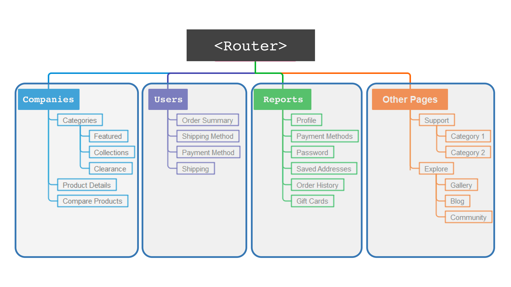
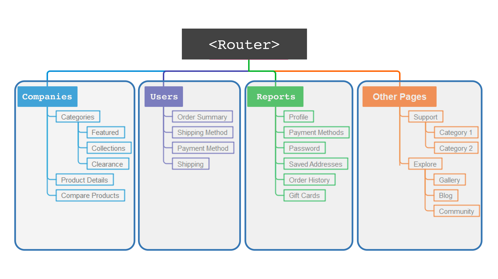

Hubert Zub, Future Conf 2023
Kto mówi?
 meet.js Białystok
meet.js Białystok

Ok, to ustalmy roboczo
po pierwsze: błędy
Po drugie: performance
Po trzecie: analityka zdarzeń
Czemu te rzeczy obserwujemy?
Więc umówmy się (😉) że jest to:
- Raportowanie błędów
- Metryki wydajności
- Analityka zdarzeń
...obserwowane na produkcji
- Raportowanie błędów
- Metryki wydajności
Analityka zdarzeń
O czym jest ta prezentacja?
Część I
Błędy
Potrzebujemy?
To co robimy z tymi błędami 🤔
- Nic 👌
- Ładny modal + please contact support
- Ładny modal + automatyczne raportowanie
Przypominajka/wyjaśnienie
📈
Jak?
-
Gotowe narzędzia
(np. Datadog, Sentry, LogRocket, New Relic, etc.)
Jak?
-
Gotowe narzędzia
(np. Datadog, Sentry, LogRocket, New Relic, etc.)
grtafa
-
Własne raportowanie do bazy danych + system do przeglądania
(np. Grafana, JIRA?)
Front-end
// logErrorService.js
const reportError = (error) => {
axios.post("/api/2.0/report-exception", {
error: JSON.stringify(error)
})
}
// someCodeFile.js
try {...} catch (e) { reportError(e); }
Back-end
// errorService.ts
export class ErrorController {
@Post()
report(@Body() reportErrorDto: ReportErrorDto): string {
// Myk do bazy danych
this.errorService.report(reportErrorDto);
}
}
Cel?
- Możliwie szybka reprodukcja
- Statystyka (!)
- Alerting (!)
- Unikamy zawracania 🎸 userowi (staramy się)
Pułapki i praktyki
Pułapka #1
Logujemy za mało
class ApiService {
async call() {
const response = await fetch("...");
if (!response.ok) {
return Promise.reject(new Error(
"Failed to fetch [URL]"
));
}
return response.json();
}
}
function process() {
new ApiService().call()
.then((data) => {
// ...
})
.catch((error) => {
// Raportujemy błąd
reportError(error);
});
}
.catch((error) => {
console.log(error);
});

Z grubsza wszystko co wiemy ☝️
Jaki ticket z tego wyjdzie?
Co pomoże (łatwe)?
- Pełny stack trace
- URL / historia URLi (route-ów)
navigator.*
Stack trace - da się lepiej?
class ApiService {
async call() {
const response = await fetch("...");
if (!response.ok) {
return Promise.reject(new Error(
"Failed to fetch [URL]"
));
}
return response.json();
}
}
function process() {
new ApiService().call()
.then((data) => {
// ...
})
.catch((error) => {
console.log(error.stack)
});
}
document
.querySelector("button")
.addEventListener("click", () => {
process();
});
function process() {
const initiatorStack = new Error().stack;
new ApiService().call().catch((error) => {
console.log(error.stack);
console.log(initiatorStack);
});
}
document
.querySelector("button")
.addEventListener("click", () => {
process();
});

function process() {
const initiatorStack = new Error().stack;
new ApiService().call().catch((error) => {
const completeStack = [
error.stack,
...initiatorStack.split("\n").slice(1),
].join("\n");
console.log(completeStack);
});
}
Co jeszcze pomoże?
- odbitka feature flag
- ewaluacja A/B
- identyfikacja użytkownika
Pułapka #2
Logujemy za dużo
Co tu jest nie tak?

A tu?
Konstruując błędy, raporty, logi:
✂️
Wspomóc się użytkownikiem to aż nie taki grzech

Cel?

Obserwacja
Użytkownicy częściej niż nam się wydaje podają kontekst/dodatkowe dane.
Użytkownicy płacący jeszcze częściej.
Czy można lepiej?
A zrzut ekranu? 🤔
async function snapshot() {
const stream = await navigator.mediaDevices
.getDisplayMedia({
preferCurrentTab: true,
});
const [track] = stream.getVideoTracks();
const canvas = document.createElement("canvas");
const video = document.createElement("video");
video.srcObject = stream;
await video.play();
canvas.width = video.videoWidth;
canvas.height = video.videoHeight;
canvas.getContext("2d").drawImage(video, 0, 0);
canvas.toBlob((blob) => {
track.stop();
// Przetworzenie + wysłanie bloba
});
}

Co jeszcze?
Granice błędów w aplikacji
 

Albo...
Niespójna struktura wyjątków
class ErrorWrapper extends Error {
constructor(
private error: string,
private errorCode: number,
private stackTrace = new Error().stack
) {
super(error);
}
serialize() {
const { error, stackTrace, errorCode } = this;
return { error, stackTrace, errorCode };
}
}
function akcja1() {
// ...
reportError(new ErrorWrapper("Unauthorized", 401));
}
function akcja2() {
// ...
reportError({ code: 401, message: "Unauthorized" });
}
function akcja3() {
// ...
reportError({
error: JSON.stringify({
code: 401, message: "Unauthorized"
})
})
}
Jeszcze jedna pułapka...
Co jeśli logi nie przychodzą?
🥸
Podsumowanie części o błędach
- Logujmy sporo...
- ...tylko bez wrażliwych danych
- Pełne zrzuty stosów
- Spójna forma
- Testujmy!
Część II
Wydajność
Dlaczego?
"Czy aplikacja jest wystarczająco szybka"
Jak na to odpowiedzieć?
Możemy zmierzyć:
- Czas renderu ekranów (poszczególnych części)
- Wąskie gardła, blokujące taski
- Wielkość pobieranych danych
Jak?
- Dynamicznie (performance, Cypress)
- Statycznie (Lighthouse etc.)
Co tak naprawdę nas interesuje?
A gdyby tak E2E?
-
Start:
otwarcie aplikacji, nawigacja, akcja użytkownika - Koniec:
interaktywność?
Jak można działać:
- Zdefiniowanie/nazwanie każdej interakcji (scenariusza, UJ, ...)
- Raportowanie pełnego czasu interakcji
- Od interaktywności do interaktywności
- (+ dopełnienie "suchymi" danymi)
Pomysły na implementację?
- Rozpoczynanie interakcji przy nawigacji (nasłuch na routerze)
- Rozpoczynanie interakcji na żądanie (zdarzenie na elemencie)
- Zależnie od frameworka
A kiedy skończyć i zaraportować?
Podpowiedź: interaktywność
🤔
A co ze szczegółami?
- Wąskie gardła
- Ilość zasobów
Wąskie gardła
- Możemy dłubać ręcznie
- ...
PerformanceObserver
const observer = new PerformanceObserver(...);
observer.observe({
type: "longtask",
});
Kolejna pułapka
Pomiar wpływa na pomiar
- Kolejkowanie
- Sampling
Coś jeszcze?
Nazywanie interakcji
-
LOAD_TABLE -
customers.details_view.LOAD_TABLE
Podsumowanie części wydajności
- Pomiary E2E
- (+ wąskie gardła)
- (+ zasoby)
- (+ dodatkowe metadane)
PerformanceObserver- Organizacja interakcji
Jak to wszystko ląduje w jednym wiaderku?
🪣
- Raportowanie błędów
- Metryki wydajności
- Analityka zdarzeń
const reportClick = (event) => {
const report = () => axios.post("/api/report-event", {
event: serializeEvent(event)
});
queueReport(report);
}
document.addEventListener('click', (e) => {
reportClick(e);
});
I co z tego? 🤨
- Znajdowanie powtarzalnie problematycznych obszarów aplikacji
- Identyfikacja skali rażenia błędów
- Optymalizacja wydajności (np. przy segmentacji geograficznej)
- Przewidywanie rezygnacji (np. względem wydajności)
Czyli
- Zbieranie kompletnych raportów błędów
- + ułatwienie sobie życia
- Poprawne nagrywanie wydajności
Pytania!
Idzcie i obserwujcie! 👋